Learning Visible 2D Flow Matching
From Gaussian Noise to Point Distributions
1. Objective and setup
The model operates on points $x\in\mathbb{R}^2$, not images. Time follows the convention that $t=0$ is noise and $t=1$ is data. Training uses randomly paired source and target samples with
$$ x_t=(1-t)x_0+t x_1,\qquad u=x_1-x_0, $$and a velocity network $v_\theta(x_t,t)\in\mathbb{R}^2$ trained by mean squared error against $u$. Sampling uses forward Euler from fresh Gaussian draws without supplying endpoints.
2. Part 1: Learn a 2D flow from scratch
2.1 Source, target, and training pairs
Source points are $x_0\sim\mathcal{N}(0,I_2)$. The target is a filled annulus (ring) with inner radius $0.7$ and outer radius $1.5$. Angles are uniform on $[0,2\pi)$ and radii are area-uniform, $r=\sqrt{U[r_{\mathrm{inner}}^2,r_{\mathrm{outer}}^2]}$, so points lie in about $[-1.5,1.5]^2$.
Figure 1 shows the two clouds. Figure 2 shows randomly paired straight interpolants. Along each such path the training velocity $u=x_1-x_0$ does not depend on $t$, so it is constant; equivalently, $\mathrm{d}x_t/\mathrm{d}t=u$.
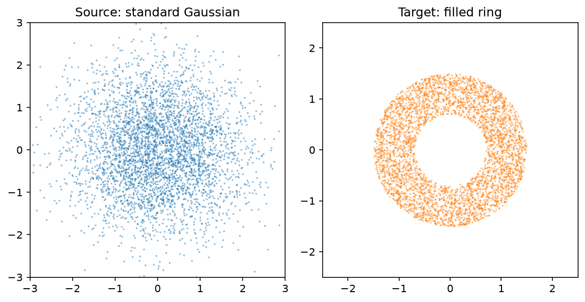
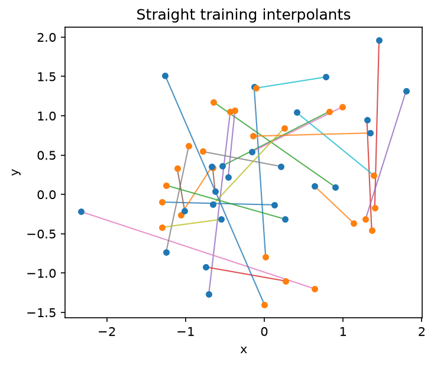
2.2 Velocity model and training
The network is a 3-layer MLP with width 128 and SiLU activations. Inputs are $(x,y,t)$; outputs are a 2D velocity. Training used Adam ($10^{-3}$), batch size 4096, and 2500 online steps on CPU. Figure 3 shows the loss curve. The objective predicts velocity, not the endpoint. Because pairs are random, many incompatible velocities are associated with the same location, so the loss need not approach zero.
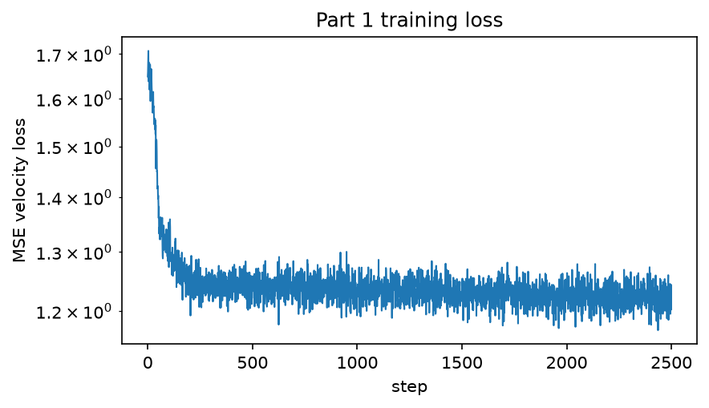
2.3 Generation and the learned field
Fresh Gaussian samples were integrated with 50 Euler steps. Figure 4 shows the cloud at several times, and Figure 5 shows the velocity field at $t\in\{0,0.5,1\}$. Figure 6 shows learned trajectories, which can bend: straight training paths do not force straight sampling paths.
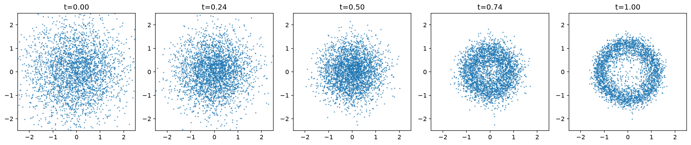
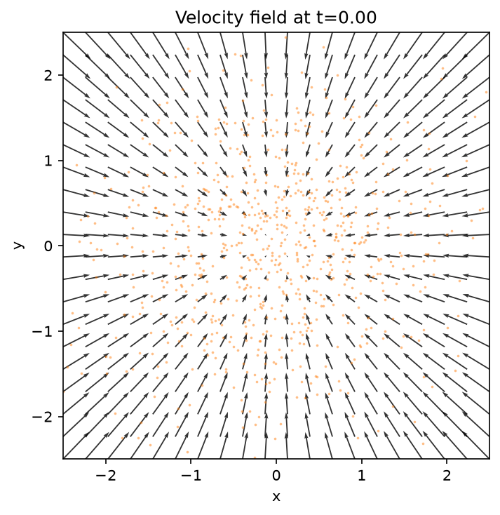
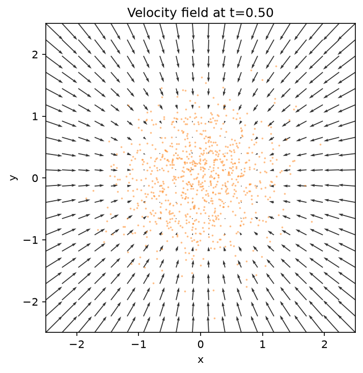
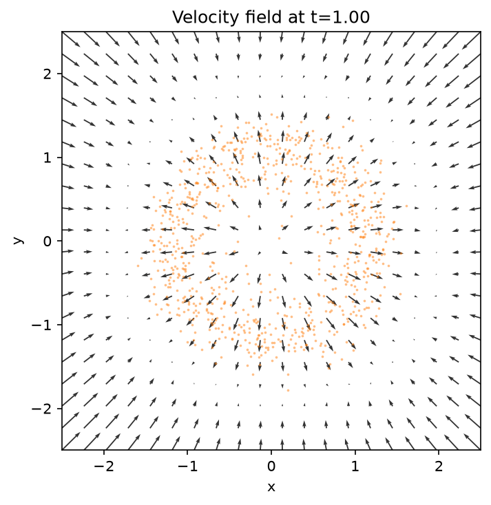
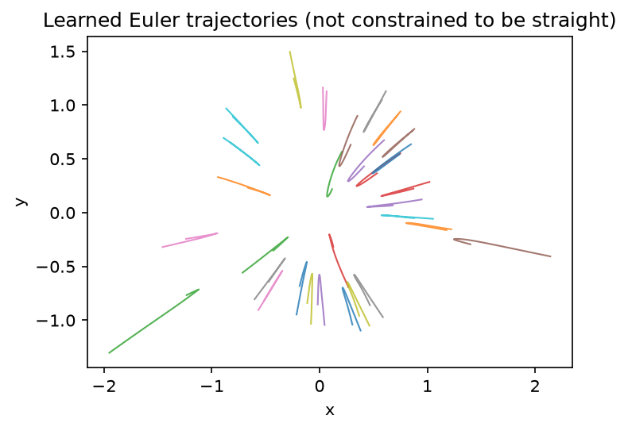
3. Part 2: Letter-B demo and sampling trade-off
3.1 Creative target
The target is a capital letter B generated with matplotlib TextPath
(DejaVu Sans Bold).
No external image is used; the glyph is original project geometry produced in code.
The outline is rasterized once to a fine mask, and points are sampled uniformly from
occupied pixels with small continuous jitter, scaled into a roughly width-$2.2$ box.
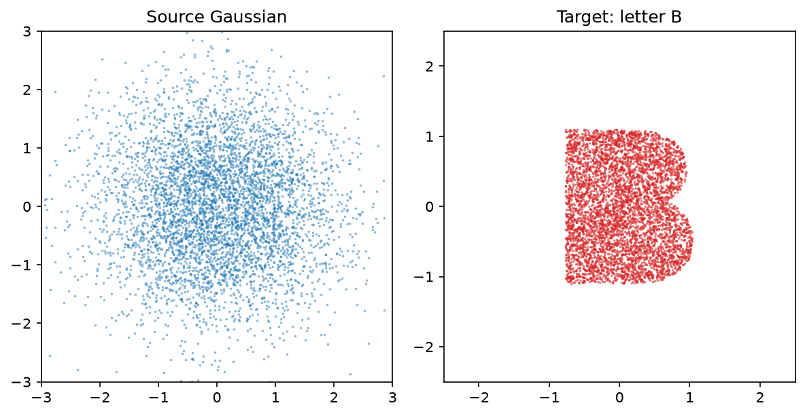
A model of the same architecture was trained for 3500 steps on this target (Figure 8).
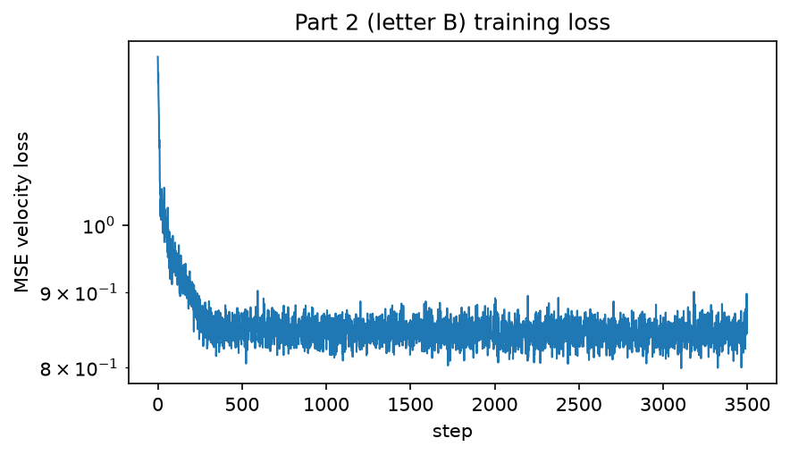
3.2 Animation and color
The same particles were tracked for 40 Euler steps. Each particle is colored by a normalized function of its initial source $x$-coordinate and that color is held fixed along the path. Color is visualization only; the network predicts coordinate velocities and never receives RGB. Representative stills appear in Figure 9, and Figure 10 shows the animated transport.
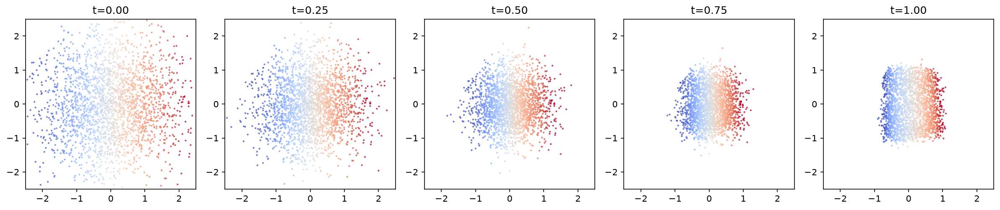
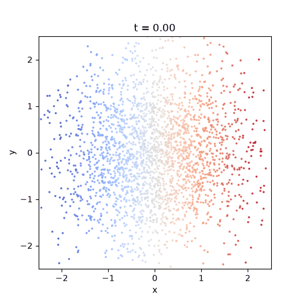
3.3 Euler step trade-off
With fixed weights and fixed initial Gaussians, step counts $N\in\{1,5,10,25,50\}$ were compared. Quality is a fixed $40\times 40$ histogram L1 discrepancy against independent letter-B samples on $[-2.5,2.5]^2$, including out-of-range mass (none observed here). Sampling time excludes rendering; NFE equals $N$.
| $N$ (NFE) | time (s) | hist L1 | hist L2 | outside |
|---|---|---|---|---|
| 1 | 0.006 | 1.936 | 0.634 | 0.000 |
| 5 | 0.017 | 0.625 | 0.047 | 0.000 |
| 10 | 0.022 | 0.428 | 0.032 | 0.000 |
| 25 | 0.040 | 0.357 | 0.028 | 0.000 |
| 50 | 0.092 | 0.351 | 0.027 | 0.000 |
Table 1. Part 2 step study (fixed $z_0$ and weights).
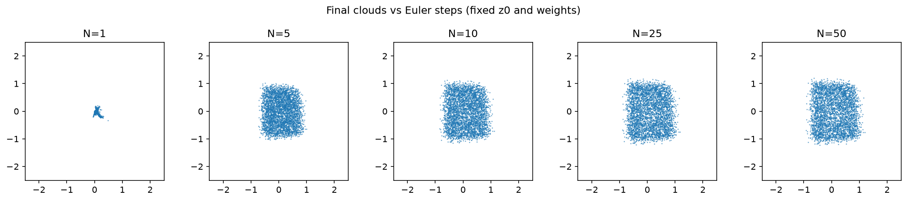
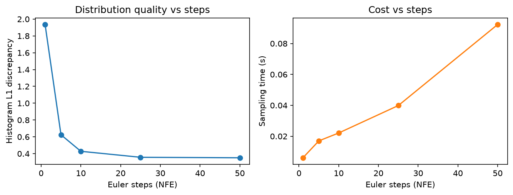
With one step the cloud is badly misplaced. Quality improves quickly through about 10-25 steps and then plateaus near L1$\approx 0.35$. Additional steps mainly buy integrator accuracy; the remaining gap is better attributed to the learned field and the discrete glyph representation than to Euler error alone.
4. Part 3: Does reflow straighten the paths?
4.1 Hypothesis
One round of reflow (training a second velocity model on straight interpolations between Gaussian sources and the baseline model's own generated endpoints) yields straighter sampling trajectories and preserves letter-B quality at fewer Euler steps than the baseline.
4.2 Reflow dataset and models
The Part 2 baseline was frozen. Twenty thousand Gaussian sources were integrated with 100 Euler steps, and each source was saved with its own generated endpoint (no reshuffling; true B samples were not used as endpoint shortcuts). Pair generation took about $0.77$ s. A second MLP of identical architecture was trained on those pairs for 2500 steps (two seeds; about $24$-$26$ s each). As a compute-matched control, the baseline was continued for 2500 additional random-pair steps on the true letter-B objective (about $64$ s).
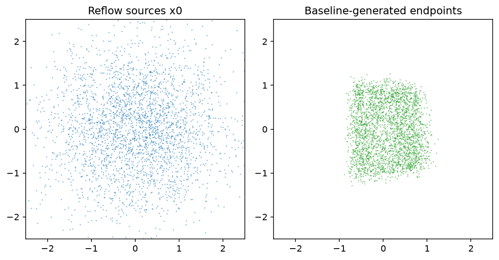
4.3 Comparison
Held-out Gaussian starts were evaluated for baseline, reflow (seed 0), continued training, and a second reflow seed. Path straightness is mean trajectory length minus start-to-end chord length on a common 50-step grid.
| Model | $N$ | hist L1 | time (s) | NFE |
|---|---|---|---|---|
| baseline | 1 | 1.921 | 0.004 | 1 |
| baseline | 5 | 0.627 | 0.014 | 5 |
| baseline | 50 | 0.354 | 0.156 | 50 |
| reflow | 1 | 0.362 | 0.003 | 1 |
| reflow | 5 | 0.353 | 0.016 | 5 |
| reflow | 50 | 0.354 | 0.160 | 50 |
| continued | 1 | 1.918 | 0.004 | 1 |
| continued | 5 | 0.634 | 0.015 | 5 |
| continued | 50 | 0.335 | 0.155 | 50 |
Table 2. Selected quality and cost results on held-out starts.
| Model | mean excess | mean path | mean chord |
|---|---|---|---|
| baseline | 0.2584 | 0.795 | 0.537 |
| reflow | 0.0001 | 0.530 | 0.530 |
| continued | 0.2465 | 0.789 | 0.542 |
| reflow seed 1 | 0.0001 | 0.529 | 0.529 |
Table 3. Path straightness on a 50-step Euler grid.
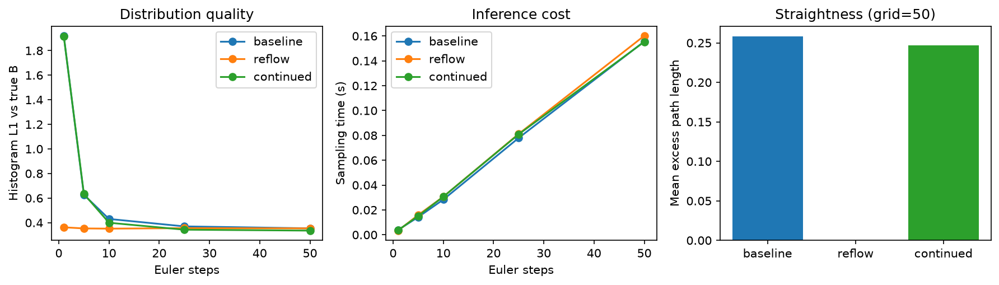
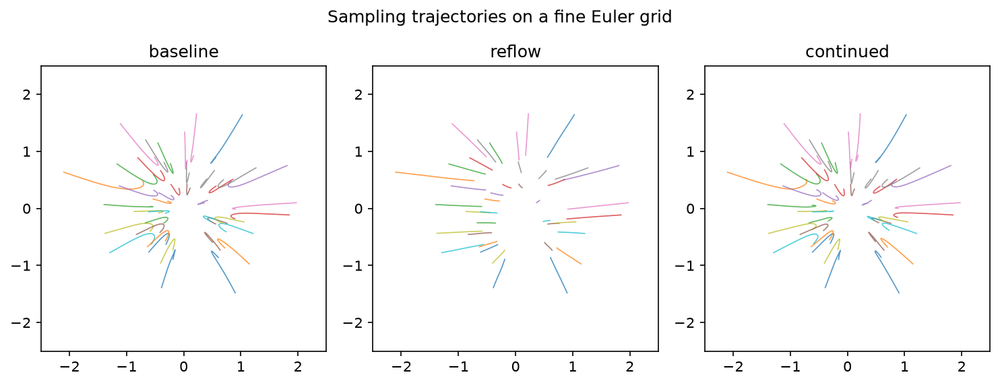
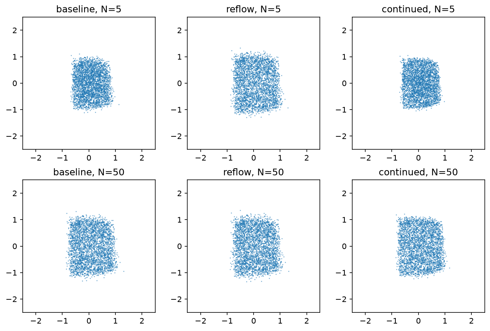
4.4 What the evidence supports
The hypothesis is partially supported.
Reflow strongly straightens paths: mean excess length falls from about $0.26$ (baseline and continued) to about $10^{-4}$ for both reflow seeds. Few-step distribution quality also improves sharply: at $N=1$, reflow L1 is about $0.36$ versus about $1.92$ for baseline and continued training; at $N=5$, reflow already matches the baseline's fine-grid quality. At large $N$, baseline, reflow, and continued training reach similar histogram L1 near $0.33$-$0.35$, consistent with reflow inheriting baseline endpoint error rather than discovering a better target distribution.
The continued-training control did not straighten paths and did not match reflow's one-step quality, so the few-step gains are not explained by ordinary extra optimization alone. Extra costs outside inference include pair generation ($\approx 0.8$ s) and reflow training ($\approx 25$ s per seed). Conclusions are limited to this architecture, letter-B target, and two reflow seeds.
5. Conclusion
A small MLP can learn a visible 2D flow from Gaussian noise to both a ring and a letter B. Animation and velocity-field plots make the transport interpretable. More Euler steps reduce numerical error up to a plateau set by the learned field. One round of reflow rectifies trajectories and improves few-step samples while preserving fine-grid quality near the baseline's endpoint distribution.